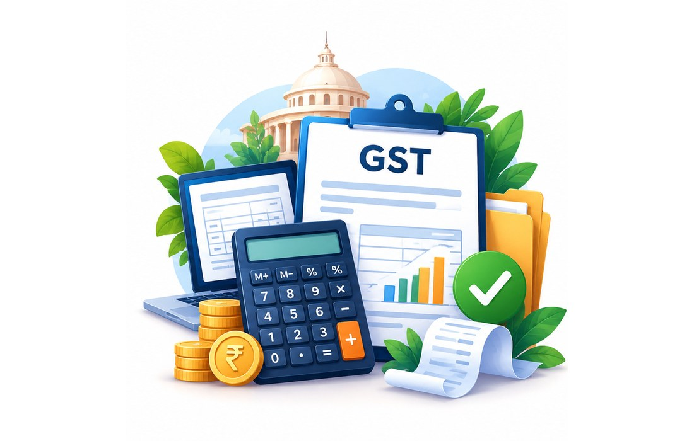

GST Support
Professional assistance for businesses in Puducherry and nearby areas, with clear document guidance and personal support.

GST Registration Assistance
Understand whether GST registration may apply to your business, prepare the right documents and complete the application with professional assistance.
What is GST Registration?
GST registration is the process through which an eligible person or business obtains a GSTIN under the applicable GST law. Whether registration is required depends on factors such as aggregate turnover, the nature and location of supplies, and specific compulsory-registration provisions.
Important: GST registration is not automatically required for every business. We review your business activity and circumstances before advising.
Who may need GST registration?
- Businesses whose aggregate turnover crosses the applicable threshold.
- Businesses covered by compulsory-registration provisions, depending on their activities and circumstances.
- Businesses that choose voluntary registration where permitted.
- Businesses with interstate, e-commerce or other supply patterns where special rules may apply.
- Businesses making only exempt/non-taxable supplies may have different treatment.
Thresholds and compulsory-registration rules have exceptions. A turnover figure alone should not be used to decide GST liability.
GST threshold — a practical guide
For many businesses, the commonly relevant threshold is ₹20 lakh of aggregate turnover, while eligible suppliers dealing exclusively in goods may have a ₹40 lakh threshold in specified States/UTs, subject to conditions and exceptions. Puducherry-specific applicability should be checked against the current GST rules for your business.
This is a general guide, not a determination of your GST liability. Compulsory-registration provisions and special cases can change the result.
Documents required
The GST Portal's checklist varies by business constitution, place of business and authorised signatory. We prepare a case-specific checklist rather than asking every customer for every document.
Proprietorship
- PAN of proprietor
- Aadhaar/identity details for applicable authentication
- Photograph, where applicable
- Proof of principal place of business
- Bank account details, where applicable
Partnership / LLP
- PAN of firm/LLP
- Partnership deed / LLP agreement
- PAN and identity details of partners/designated partners, as applicable
- Principal place of business proof
- Authorised signatory details/authorisation, where applicable
Company / OPC
- PAN of company
- Certificate of Incorporation
- MOA/AOA, where applicable
- Director/authorised signatory details
- Principal place of business proof
- Authorisation for authorised signatory, where applicable
Premises proof may include
- Property tax receipt / municipal record
- Electricity or other utility bill
- Rent/lease agreement
- Consent letter, where applicable
- Government-issued premises document, where applicable
Additional documents can be required depending on the constitution, activity, premises and any clarification raised by the tax officer.
Aadhaar authentication & verification
The GST Portal currently provides Aadhaar authentication during new registration for applicable taxpayers. Depending on the case and risk parameters, the process may involve OTP authentication or biometric/photo/document verification at a designated GST Suvidha Kendra. If authentication or verification is not completed as required, the application can follow a different verification path.
How GST Registration works
Business assessment
We review your business type, turnover, supplies and registration circumstances.
Document checklist
We identify the documents and information relevant to your constitution and premises.
Application preparation
We prepare the GST REG-01 application and guide the applicable authentication/verification.
Department processing
We monitor the application and assist with clarification or additional requirements if raised.
GSTIN & certificate
After approval, we help you check the GST registration details and certificate.
Pricing
GST Registration Assistance — ₹3,000
This is KVB ENTERPRISES' professional assistance fee. The normal GST registration application on the official GST Portal does not carry a government application fee. Any separate statutory/third-party charges, if applicable to your case, are not included.
Frequently Asked Questions
Is GST registration mandatory for every business?
No. Liability depends on aggregate turnover, nature and location of supplies and compulsory-registration provisions. Some exempt/non-taxable activities may have different treatment.
Is GST registration free?
The normal GST registration application on the official GST Portal does not carry a government application fee. KVB ENTERPRISES charges ₹3,000 for professional assistance.
Can I voluntarily register below the threshold?
Voluntary registration may be available subject to the applicable GST rules. Once registered, the taxpayer has GST compliance obligations.
What documents are needed?
The checklist depends on your business constitution, premises and authorised signatory. We provide a business-specific checklist rather than a one-size-fits-all list.
Do I need Aadhaar authentication?
Aadhaar authentication is part of the new-registration process for applicable taxpayers. Depending on the case, OTP or biometric/photo/document verification may be required.
How long will GST registration take?
Processing depends on the application, authentication, verification and whether the department raises a clarification or requires further verification. We do not promise a fixed approval time.
Can KVB help if the department raises a clarification?
Yes. We can assist with understanding the clarification and preparing the applicable response/documents.
What happens after I get GST registration?
GST registration brings ongoing compliance obligations. Depending on your profile, you may need periodic return filing, tax payment, invoice compliance and other GST records.
Sources: GST Portal registration guidance and official GST registration document checklist; CBIC GST guidance. Requirements can change and should be checked against the current portal at the time of application.